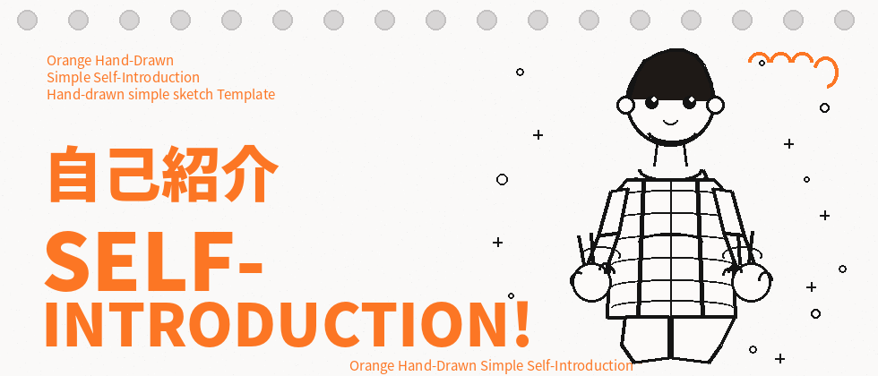
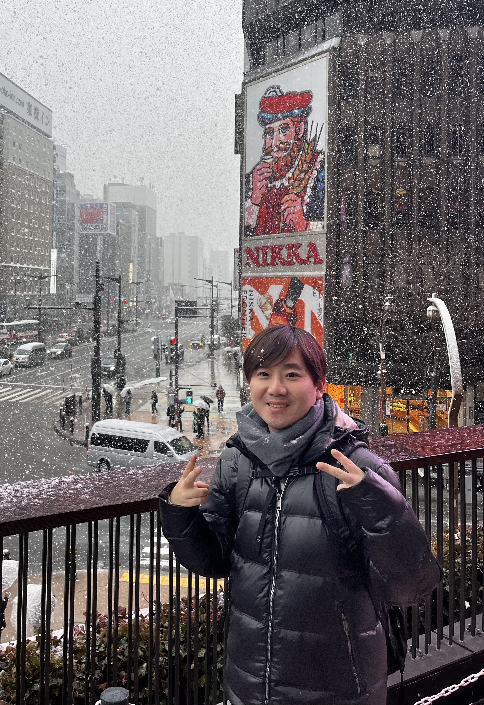
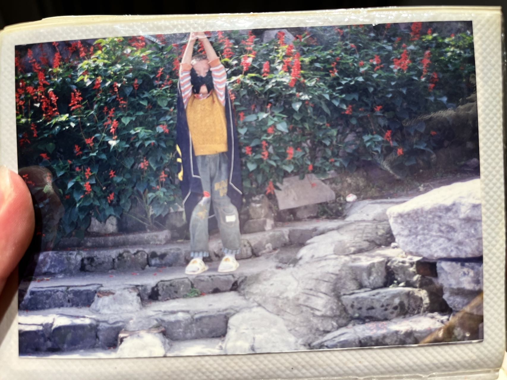
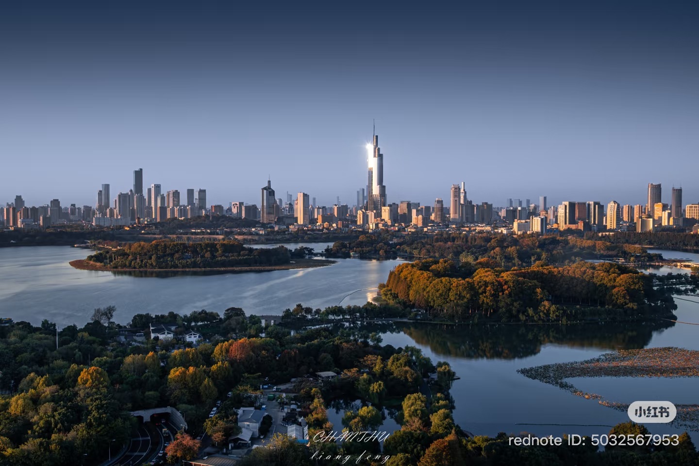

任志雲です。中国の南京出身です。
大学卒業後は南京で約8年間、ネットマーケティングの仕事をしていました。最後の会社には4年ほど勤めていて、中国の通信会社である China Telecom で働いていました。仕事内容を簡単に言うと、今のTikTokみたいなSNSのキャンペーンやプロモーション企画を考える仕事です。
2024年に横浜へ来て、日本語学校での2年間を過ごしました。先生やいろいろな国の友達と出会い、一緒に飲み会やイベントにもたくさん参加して、本当に楽しい毎日でした。
そして今は 大原学園 でIT技術を勉強しています。新しいことを学ぶ毎日がすごく楽しいです。 これからも自分らしく頑張って、卒業後は日本でエンジニアとして就職したいと思っています。



南京は中国の江蘇省にある都市で、上海の近くにあります。 昔の中国の首都だったこともあり、歴史のある街として有名です。 南京料理では、「塩水鴨（えんすいあひる）」がとても人気です。 あっさりした味で、多くの人に愛されています。 また、南京は春と秋の景色がきれいで、落ち着いた雰囲気がある街です。 歴史と現代の文化が一緒に楽しめるのも魅力です。